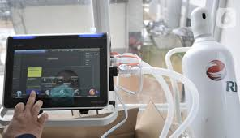
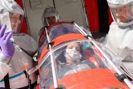

Pengobatan Ebola
Hingga saat ini, belum ditemukan pengobatan untuk menyembuhkan Ebola. Pengobatan yang diberikan hanya bertujuan untuk menghambat penyebaran dan mendukung kekebalan tubuh pengidap dalam memerangi virus.
Berikut beberapa metode untuk pengobatan virus ebola :
PERAWATAN PENDUKUNG
Terapi suportif dengan memperhatikan volume intravaskular, elektrolit, nutrisi, dan perawatan kenyamanan bermanfaat bagi pasien. Isolasi sebagai penghalang yang ketat di sebuah kamar pribadi merupakan metode yang digunakan. Hal ini dikarenakan urine, tinja, dahak, dan darah, bersama dengan benda-benda yang berhubungan dengan pasien atau cairan tubuh pasien seperti peralatan laboratorium, harus didesinfeksi dengan larutan natrium hipoklorit 0,5%. Bahkan Pasien yang telah meninggal akibat virus Ebola harus dimakamkan segera dengan melakukan kontak yang seminim mungkin.
FARMAKOLOGIS TERAPI
Inhibitor NRTI enzim sel-dikodekan S-adenosylhomocysteine hidrolase (SAH) telah terbukti menghambat replikasi Zaire ebolavirus pada orang dewasa. Penghambatan SAH secara tidak langsung menghambat reaksi transmetilasi diperlukan untuk replikasi virus. Smith et al menemukan bahwa pada kera rhesus yang terinfeksi dengan dosis mematikan virus Ebola, pengobatan dengan interferon beta awal setelah paparan menyebabkan peningkatan yang signifikan dalam waktu kelangsungan hidup, meskipun tidak mengurangi angka kematian secara signifikan. Penemuan ini menunjukkan bahwa pasca-paparan awal terapi interferon-beta mungkin tambahan yang menjanjikan dalam pengobatan infeksi virus Ebola.
Selama 1995 wabah Ebola di Kikwit, DRC, sembuh manusia plasma digunakan untuk mengobati 8 pasien dengan penyakit Ebola terbukti, dan hanya 1 pasien meninggal. Penelitian selanjutnya tidak bisa menunjukkan manfaat kelangsungan hidup yang diberikan oleh produk plasma. Kelangsungan hidup pasien ini menunjukkan bahwa imunitas pasif mungkin bermanfaat pada beberapa pasien.
Sebuah rekombinan manusia antibodi monoklonal yang ditujukan terhadap amplop glikoprotein (GP) virus Ebola telah terbukti memiliki aktivitas menetralkan. Ini Ebola virus-antibodi penetral mungkin berguna dalam pengembangan vaksin atau sebagai agen profilaksis pasif. Vaksin DNA mengungkapkan baik amplop GP atau protein nukleokapsid (NP) gen dari virus Ebola telah terbukti menyebabkan perlindungan pada tikus dewasa yang terkena virus.
ANTIBODI MONOKLONAL
Studi awal dalam kera cynomolgus diberikan koktail 3 antibodi monoklonal murine yang berbeda (mAbs; ZMab) ditujukan terhadap Ebola virus amplop glikoprotein epitop menunjukkan pasca pajanan aktivitas profilaksis 1-2 hari setelah virus Ebola. Hasil itu cocok dengan campuran. Dari 3 chimerized anti-Ebola mAbs virus (MB-003) yang memiliki daerah konstan manusia diproduksi di tanaman tembakau yang dimodifikasi secara genetik. Ketika diberikan sebagai profilaksis pasca pajanan 2 hari setelah tantangan virus, MB-003 aktif baik pada tikus dan kera rhesus.
TERAPI
Fokus penelitian mAb kini bergeser ke arah pengobatan infeksi. Dalam hal itu, 43% dari kera rhesus diobati dengan MB-003 setelah onset infeksi virus Ebola selamat dibandingkan tidak ada kontrol yang tidak diobati. Didirikan infeksi didefinisikan sebagai demam dan virus Ebola positif reverse-transcription polymerase chain reaction (RT PCR) hasil. Demikian pula, ZMab menghasilkan tingkat kelangsungan hidup 50% pada kera cynomolgus ketika diberikan dimulai pada hari ke-4 setelah tantangan virus.
Baru-baru ini, kombinasi optimal dari mAbs manusiawi diproduksi di tanaman tembakau yang dimodifikasi secara genetik dan memiliki spesifisitas untuk 3 berbeda Ebola virus glikoprotein epitop diselamatkan 100% dari kera rhesus bahkan ketika diberikan pada tahap lanjut penyakit 5 hari setelah tantangan virus (ZMapp, Mapp biofarmasi, Inc., San Diego, CA, USA, dan Defyrus, Inc., Toronto, Kanada) Selain itu, dua pasien dengan Ebola di Amerika Serikat yang baru saja menerima ZMapp melalui persetujuan obat baru diteliti darurat (AS. FDA) mengalami penurunan viral load dan selamat. Selanjutnya, lain 3 dari 4 individu yang diobati dengan ZMapp selamat. Hasil ini menunjukkan bahwa ZMapp mungkin berguna untuk pengobatan infeksi kronis pada manusia.
Pemulihan sering membutuhkan waktu berbulan bulan, dan penundaan dapat diharapkan sebelum kembalinya aktivitas normal. Peningkatan berat badan dan kembali kekuatan yang lambat. Virus Ebola terus hadir selama berminggu-minggu setelah resolusi penyakit klinis. Bahkan sperma dari orang sembuh dari infeksi Ebola telah terbukti mengandung virus yang menular, dan Ebola telah ditularkan melalui hubungan seksual yang melibatkan memulihkan pria dan pasangan hubungan intim. Setiap orang yang terkena pasien yang terinfeksi harus diawasi dengan ketat untuk tanda-tanda awal penyakit virus Ebola.